|
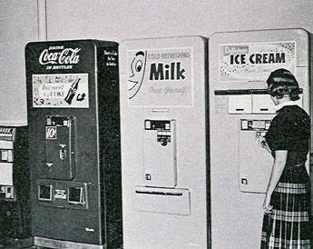 Vending MachinesWhen your great, great grandparents were very small children, the mere notion of winking, blinking, flashing metal robots capable of exchanging nickels for frozen chocolate ice cream was just a crazy daydream. But now? It's science fact. [SFX: Wonky space music] Welcome to the world of tomorrow -- today! Stainless steel, safety glass, and plexi-chrome vending machines have evolved so gracefully over time that now even the most jaded and suspicious of adults can finally take them for granted. Combined with new advances in soda can delivery, snack rack dispensary, candy spiral arm technology and credit card verification techniques, it's easy to see why vending machines are truly man's best friend. Beep boop! Take me to your leader! Would you like to establish a career in the automated retail arts? Americans feed vending machines over $22 billion each year, but the vending industry is fraught with hazards -- including the everpresent need to combat negative public perception. Vending machines represent the earliest physical manifestation of corporate downsizing and far-fetched notions that a person could ever be replaced by a thing. 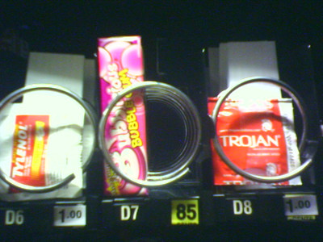They're not always associated with quality merchandise, and there's even a perception that vending machines can't be trusted. Paid-for Snickers and unreachable Twix have too often dangled like mistletoe from coiled dispensaries which failed to deploy. Client satisfaction and trust are similarly eroded when there's nobody around to complain to. Accountable operators travel all over the state, and their full phone numbers are rarely prefixed with 1-800. Responding to allegations of poor customer service, companies developed "smart" vending machines which are meaner and twice as aggressive. The most advanced venders come equipped with temperature-sensitive electrothermographs which increase the price of a drink from $1.00 to $1.50 on particularly hot afternoons. Ratios between frequency of use and the passage of time can also be established, enabling machines to charge more for drinks at heavily-populated outdoor social events. The logic is as follows: if there's a long, steady pattern of coin clinks into the machine, increase the price by 25 cents after every tenth clink. Decrease the price when 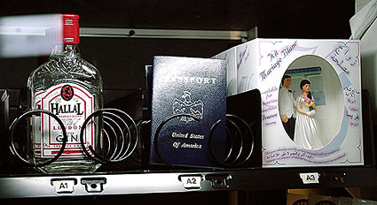disgruntled customers start walking away and there are fewer sales, or your internal balance register indicates a steady sequence of violent blows or determined kicks. In Why We Buy, CEO and Envirosell, Inc. founder Paco Underhill describes the vending machines of tomorrow. Nearly one-fifth of all Americans will be 65 or older by the year 2025, necessitating drastic changes in the way businesses conduct automated transactions. The failing eyes and arthritic fingers of senior citizens have already forced vending machines to adapt. Large, rectangular buttons which dispense cans of Mountain Dew are growing larger, much easier to push, and they're increasingly self-illuminated -- preferably with enormous photographs of the desired product in question. How much money did I just put in? What am I buying again? Where am I? Innovations in vending machine user interfaces translate directly into other devices, too. ATMs will need to grow phatter, doper, and more pimped-out in an effort to woo seniors. The buttons on mobile phones and TiVo remotes will be similarly big-boned, growing more 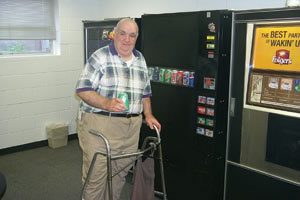colorful with each passing year and taking advantage of embedded liquid crystal displays suitable for "dim lighting conditions," even though it's high noon and the sun is directly overhead. Who will stock these machines of the future? Anne Rawland Gabriel, author of Start Your Own Vending Business, chronicles a newer, hipper demographic of vending machine operators mysteriously referred to as those belonging to Generations X and Y. Unlike the technology industry, where "innovation makes millionaires overnight," Gabriel reminds us that today's v-commerce entrepreneurs must actively pursue cost control, aggressive marketing, exceptional management, and just plain hard work. On page five, one can experience an interactive sidebar containing this Fun Fact: Generation Xers are big consumers of hand-held foods! 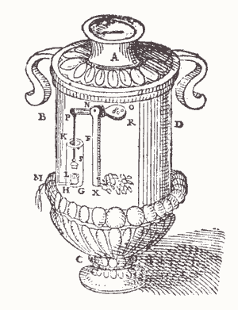Yes, it all started way back in Generation G, when in 215 B.C. an enterprising young lad named Hero from Alexandria published Pneumatic -- a modest collection of blueprints containing some of the craziest devices the world had ever seen. One contraption was a specialized, self-contained urn, which actually squirted holy water whenever a patron of the church inserted a coin. It was simple gravity-based lever system: the weight of a single coin would angle a funneled pan forward and down, splashing God's cool liquid refreshment directly into your waiting lap. Talk about a time saver. Sadly, Hero's whimsical invention couldn't discern real coins from fake ones, leading to inevitable thefts of the blessed water by Roman officials and copper-pinching church goers. He died without ever seeing his invention evolve from a sacred fountain to the full-on dirty French postcard mini-kiosk the 18th century would soon be clamoring for. In the 1880s, when patents were secured for a smattering of mechanical counterfeit coin detectors, the porn industry really took off. Vending machines were there, man -- right there -- riding bareback in History's sidesaddle, selling snuffs and tobaccos, slinging dirty books, and even returning exact change. Is your mind sufficiently blown, earth human?
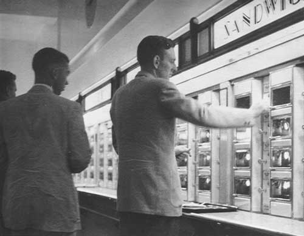Whoever said the warmest, most memorable meals in life are those prepared with loving human hands probably never experienced the gumball, a prime staple of vending machines since 1888. The Thomas Adams Gum Company was the first to market Tutti-Fruiti in kiosks installed upon the elevated subway platforms of New York City. Less than a decade later, a completely coin-operated restaurant, or automat opened in Philadelphia. Joseph Horn and Frank Hardart imagined a Utopian world without waitresses, where for three nickels and the squeezy jerk of a big fat knob, machines would serve customers classic recipes like Macaroni & Cheese, Boston Baked Beans, and creamed spinach. These diners were staffed by human beings, too -- unseen cooks in the back kitchen who prepared the hot entrees. Coffee exchangers were also employed: they discarded coffee which had been brewing in the urns every twenty minutes, and replaced it with a fresh batch. The throw-it-out-after-twenty-minutes rule would later be adopted by Starbucks Coffee. 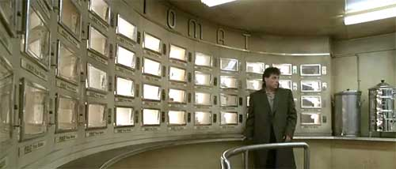It's estimated that the Horn & Hardart New York and Philadelphia franchise vended to 800,000 people each day, until it finally closed in 1962. New York's last vending machine restaurant was replaced in 1991 with a Burger King. The cafe was later recreated in stunning technicolor for the 1998 science fiction mystery Dark City. So clearly, it's only a matter of time before vending machines learn how to stock themselves with smaller, self-replicated automats capable of dispensing the most dangerous snack treat of all -- MAN!! Seriously people, have we learned nothing from The Matrix? 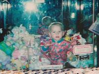A Piggly Wiggly thrift store in Sheboygan, Wisconsin is probably about as fun as it sounds -- unless you climb inside their joystick-operated, crane-based vending machine like 7-year-old Timothy Novotny did in 2004. He crawled in through an opening no larger than an 8.5 x 11" piece of plain white printer paper -- but when he tried to get out, he discovered the entrance was blocked. Locksmiths, rescuers, and firefighters alike worked for over an hour, moving the vending machine to the back of the store away from public view, and out behind the main loading dock. The Boy Who Wanted A Toy, quipped the WKMG Local6 Headline News. Classic! Less than a year later, three-year-old James Manges of Elkhart, Indiana managed to climb up the chute of another popular claw-style vending machine at Wal-Mart, 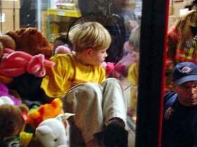where he sat like the Lion King among the plush animals for several hours. His 22-year-old mother Danielle, initially amused, grew frantic when Wal-Mart employees confessed they couldn't find a key to the machine and there was no way to get him out. "He climbed up the chute and into the bin," Danielle told WNDU NewsCenter16 reporter Robert Borrelli. "He was playing with all the toys and hanging from the bar like a monkey." The Elkhart fire department was called to the scene. "I expected his hand to be caught in the machine," officer Anthony Coleman admitted. "But it was his entire body." James' mother was ordered by a judge to attend parenting classes. She insists her son has done things like this before: climbing out of his playpen, escaping from doors and even leaping from windows. So has her husband James: he was taken into custody shortly after police were called to the scene of a warehouse robbery. He was discovered in possession of gloves, a flashlight, two screwdrivers and a hatchet. The Man Who Wanted To Rob And Rape And Dismember You In The Dark, quipped the WKMG Local6 Headline News. Classic! In the latter half of the twentieth century, vending machines began to rebel for the first time against their flesh-and-bone masters. Since 1978, over 50 people have been killed by vending machines -- and over 100 severely injured. Quebec, 1998: Kevin Mackle, 21, while demonstrating his unconditional love for a vending machine by hugging it back and forth in a rocking, tilting fashion, was crushed to death when the machine toppled over, squishing him 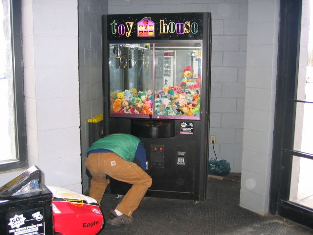beneath its enormous rectangular weight. When a vending machine falls on top of you, it's responding more out of fear than fury. It's saying please stop. It pins you to the linoleum floor almost immediately, forcing you to squint into the overhead fluorescent lights. Your elbows and knees are unable to bend or pivot in any direction, as if you've been placed in a small coffin. It's very likely your head hit the ground pretty hard upon impact. If the tilt-over was a clean 90-degree sweep, your nose, such as it is, is bent, or your cheeks are pressed firmly against the display window. If the machine topples and torques around one of its protective rubber footpads, skewing slightly at an angle, the top corner digs an enormous diagonal gash across your entire body from head to toe. If the front panel is made of glass, consider yourself lucky: it might easily shatter against the floor. If that happens, and you don't immediately start bleeding to death, 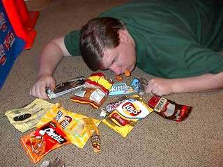your ribcage will be allowed inside the machine -- just inches from the Corn Nuts -- where your lungs can mercifully expand and contract several additional cubic millimeters while your friends prepare their digital cameras. Mr. Mackle's surviving family sued the Coca-Cola Company for $665,000. They also sued the manufacturer of the machine, the California-based Vendo company, claiming they knew the machine could tip over easily but did nothing to warn consumers. Then they sued Beaver Foods, the operator and caretakers of the machine, who had observed students at Quebec University rocking the machine back and forth numerous times, ignoring the warning placard: TIPPING OR ROCKING MAY CAUSE INJURY AND DEATH. Indeed, rather than pay attention to a vending machine's plaintive warning, some online content producers are happy just taking a picture of it for the purposes of making their LiveJournal experiences more immersive. See the funny guy? He's dead. 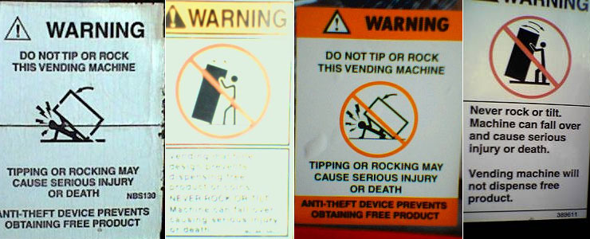 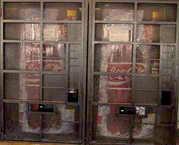"I've rocked the machine. A couple times, at least. Not a Coke machine, but those nosh boxes that hold fatal snacks on metal corkscrew clips all in a row. Sometimes the machine takes your money & won't completely detach the snack bag. Pull the machine back toward you from the top, shake a bit, the bag drops, and you get what you paid for." Good luck with that, randomly Googled blogger. Vending machine deaths have sparked a bloody war between man and machine, seemingly with no end in sight. Recent battles include the Palos Verdes Peninsula High School massacre of March, 2004 -- where eleven vending machines were tormented and executed without explanation. No groups have come forward to claim credit for the destruction, although custodian Ben Paule's sense of victory was palpable: "The repair for the vending machines is not in our hands. The Coca-Cola Company has to come in, fix them, calculate the cost of repair, and restock them." According to principal Kelly Johnson, the machines were killed sometime between 1:00am and 3:00am. Someone came in during the middle of the night and damaged the money slots on the vending machines, possibly with a butane torch. Neither Honeywell engineers nor disgruntled high school students can ever equal the ingenuity of vending machines' most formidable opponent: little birds. After a coin-operated Magic Wand car wash in Fredericksburg, Virginia was coming up several hundred dollars short each week, manager Bill Dougherty suspected his employees of sharing pass-keys amongst themselves to steal quarters. 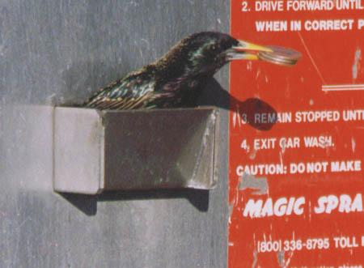Dougherty set up a surveillance camera which monitored the coin device from a safe distance, and quickly discovered a host of starlings -- birds attracted to shiny objects -- working as a team to commit petty theft. For the purposes of nesting or attracting a mate, the starlings would conspire together: one would fly up the machine to shake coins loose, the other would clamp two or three quarters together between her beak and zip back to base. When fellow starlings saw where the coins were coming from, they flew in packs to the car wash and duplicated her behavior. Fly! Fly back to school, little Starling! Quid pro quo Clarice, etcetera and so forth. Well, that wraps it up for this episode of The World of Tomorrow Today. In the meanwhile, it's safe to say that whether you like vending machines or hate them, the future is finally here to stay -- forever and ever. Now if only some young Einstein could daydream up a way to put shampoo and conditioner in the same plastic bottle! [SFX: Wonky space music] |